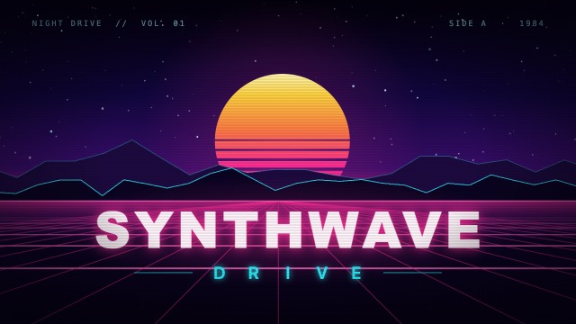
Synthwave Drive
A retro night-drive loop: striped sun, neon grid floor racing in, a title that flickers on
Videos made with pixi-effects. Press play: each one opens at its own size and runs live, right in your browser.

A retro night-drive loop: striped sun, neon grid floor racing in, a title that flickers on
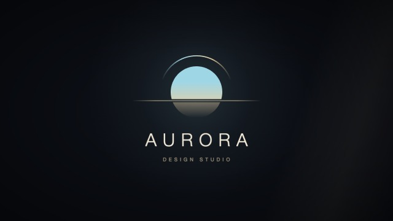
A restrained logo reveal: a horizon line, a light that rises through it, a letter-spaced lock-up
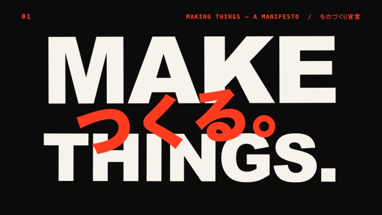
Five bilingual statements on making things, slammed onto a 100 BPM grid
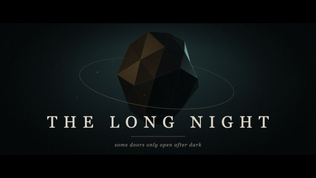
Main-title sequence for an imaginary thriller: a PixiJS 3D shard in fog, letterboxed credits, film grain
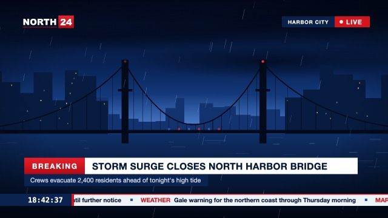
A broadcast news package: channel stinger, BREAKING flash, wipe-masked lower third, live ticker and running clock
Broadcast football package: crests, count-up score, stat bars, momentum graph and a GOAL stinger
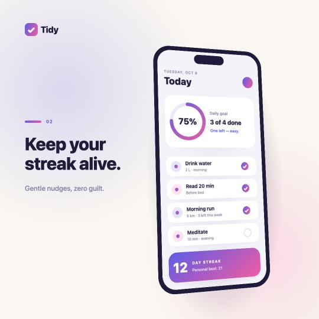
A habit-tracker promo: 2.5D phone mock-up, sliding UI cards, a progress ring and streak that count up, swapping captions, logo + Download
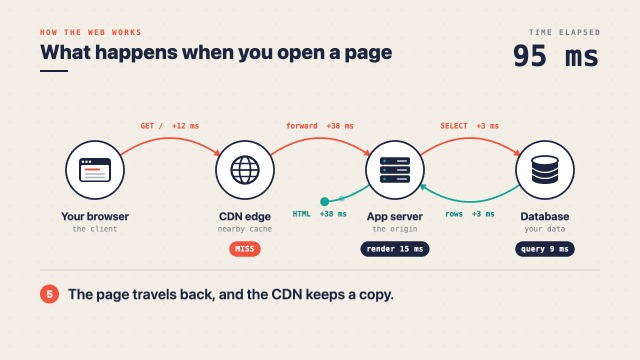
A flat explainer: client, CDN, server and database, one packet and 130 ms at a time
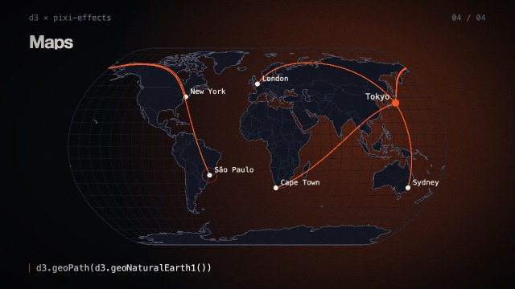
d3 computes, pixi-effects performs: a bar chart, a self-drawing line, a donut and a world map with great-circle routes, every number from d3 scales, line, pie, arc and geoPath
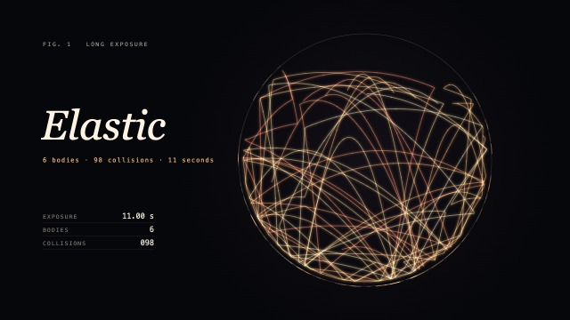
Six bodies of light in a circle under gravity, every collision a note, traced as one long exposure
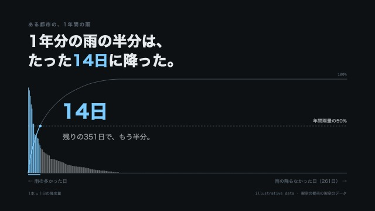
365 day-bars re-sort themselves: half a year's rain falls on 14 days (illustrative data)
A logo sting for an invented joinery workshop: two blocks slide out of a close-up and lock with one wooden click
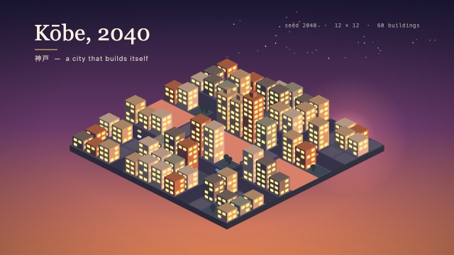
A seeded isometric city builds itself from dawn to dusk — three polygon faces per block, oklab light, windows that wake up
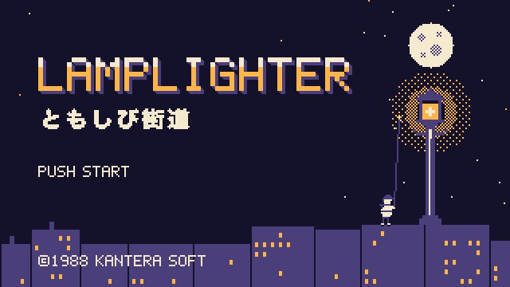
The attract mode of a 1988 cartridge that never existed: maker splash, title screen, demo play, title again, with its own chiptune
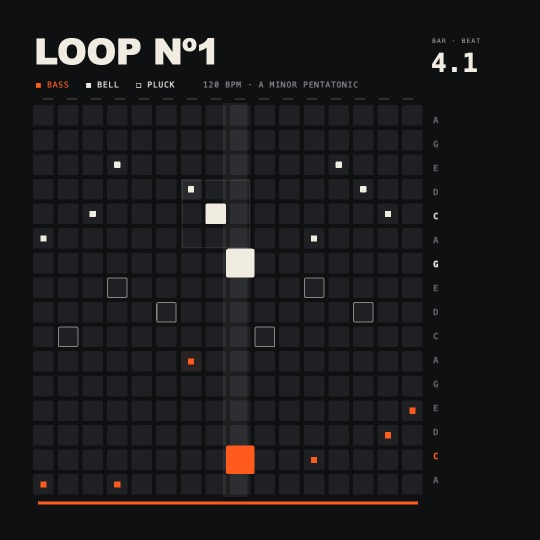
An original two-bar loop written as text; every cell is a note and flares the moment it sounds
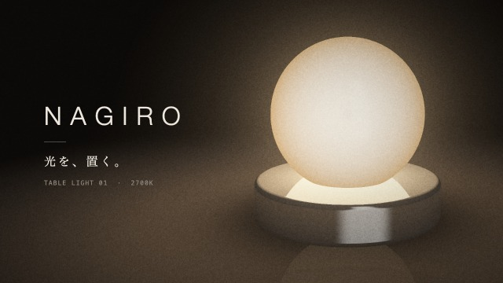
A quiet product film for an invented table light, told only with light on aluminium and opal glass
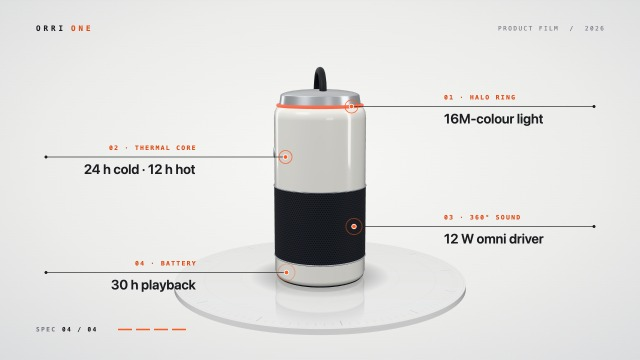
A glossy PixiJS 3D product turntable with spec callouts and a brand lock-up, studio white to graphite
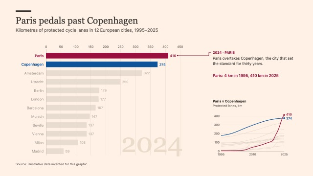
An FT-style bar-chart race of protected cycle lanes
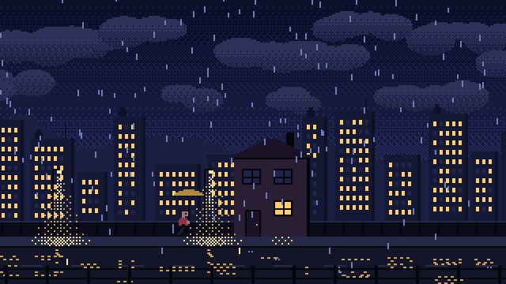
A 320x180 pixel cut-scene: afternoon to night, rain, a lit window
A notebook page where a rocket draws itself stroke by stroke, is coloured in with hachure, counts down and lifts off toward a moon; every wobbly line comes from Rough.js as plain path data
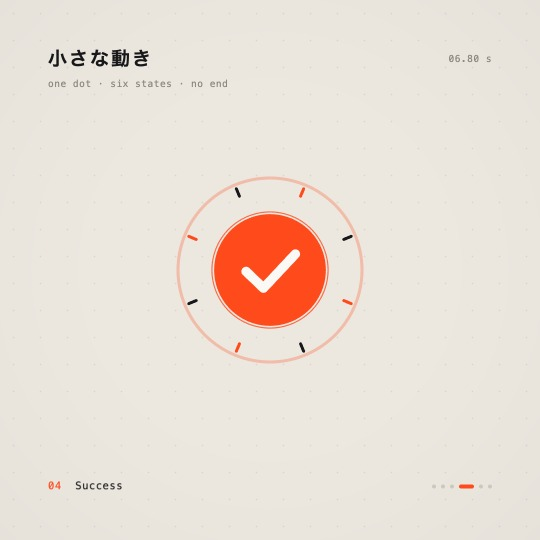
One dot becomes a loader, a progress bar, a toggle, a check and a spinner, and comes home: a seamless 12 s loop
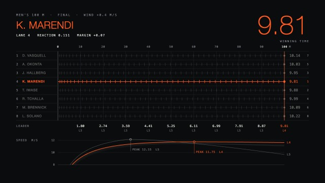
A 100 m final in real time, told only with traces and numbers
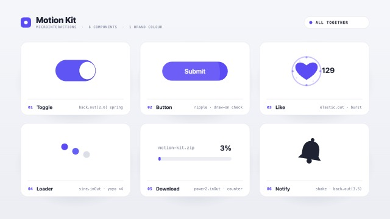
Six microinteractions on a 3×2 board — toggle, ripple + check, like burst, loader, download, bell — played as a cascade, then all at once
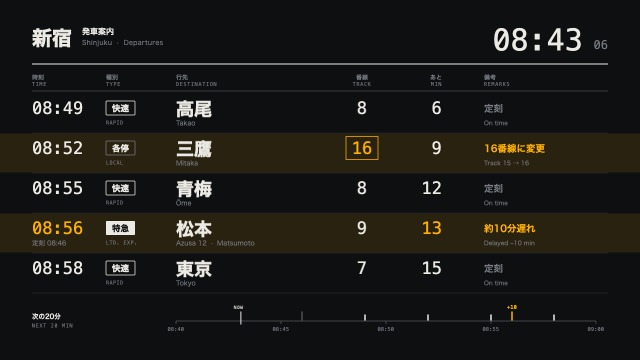
A station board where nothing moves unless the information changed: a departure, a delay, a track change
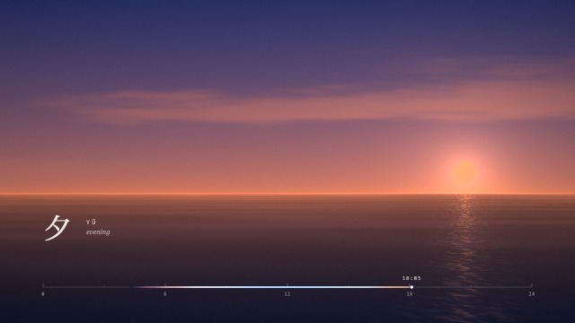
A day of sky, dawn to night, as one slow colour field with a 24-hour scale